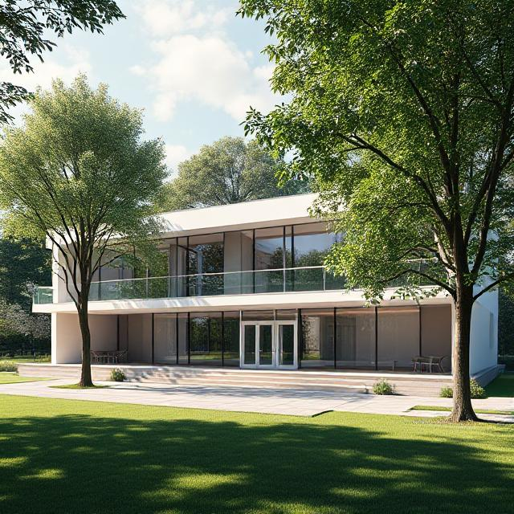
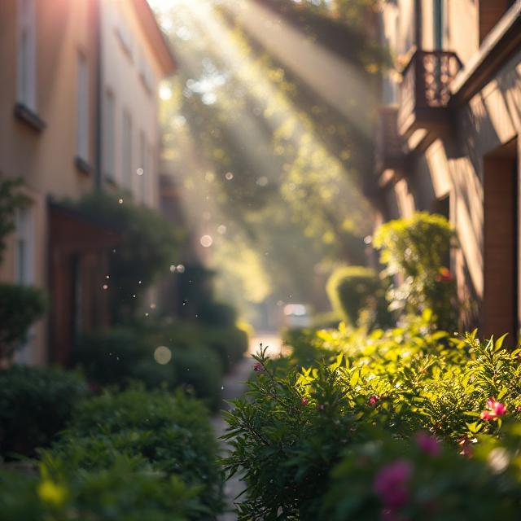

← Retour au programme › Poésie
📘 Unité 1 · Poésie
Poésie
L'école
🎧 Écoute littéraire
0:00
0:00
Dans notre rue,
il y a des autos,
des gens qui s'affolent,
Un grand magasin, une école,
Et puis mon cœur qui bat
Tout bas.
Dans cette école, il y a
Des oiseaux chantant tout le jour
Dans les marronniers de la cour.
Mon cœur, mon cœur qui bat
Est là.
il y a des autos,
des gens qui s'affolent,
Un grand magasin, une école,
Et puis mon cœur qui bat
Tout bas.
Dans cette école, il y a
Des oiseaux chantant tout le jour
Dans les marronniers de la cour.
Mon cœur, mon cœur qui bat
Est là.
🔹 Explication des mots
- s'affolent - se précipitent, s'affolent, paniquent
- magasin - boutique, commerce, échoppe
- cœur - cœur, âme, sentiment
- bat - bat, palpite, pulse
- marronniers - châtaigniers, arbres à marrons
- cour - cour, préau, espace



Ma réponse est :
Le nombre 1
🎧 Écoute littéraire
0:00
0:00
Un jour, 1 voulut
Jouer au cerceau
Avec le zéro.
Il courut, courut
A en perdre haleine
Jusqu'à la dizaine.
Alors, par caprice,
1 devenu 10
Dribbla la centaine,
Tripla le zéro
Et s'arrêta pile
En plein dans le 1000.
Jouer au cerceau
Avec le zéro.
Il courut, courut
A en perdre haleine
Jusqu'à la dizaine.
Alors, par caprice,
1 devenu 10
Dribbla la centaine,
Tripla le zéro
Et s'arrêta pile
En plein dans le 1000.
🔹 Explication des mots
- voulut - a voulu, désira
- cerceau - cercle, anneau, ring
- zéro - zéro, nul
- perdre haleine - perdre le souffle
- dizaine - dizaine, groupe de dix
- caprice - caprice, envie soudaine
- dribbla - dribbla, évita, contourna
- centaine - centaine, groupe de cent
- tripla - tripla, multiplia par trois
- pile - pile, juste, exactement


Ma réponse est :
📊 Votre auto‑évaluation
Correct : 0
Partiel : 0
Incorrect : 0
Sans réponse : 2